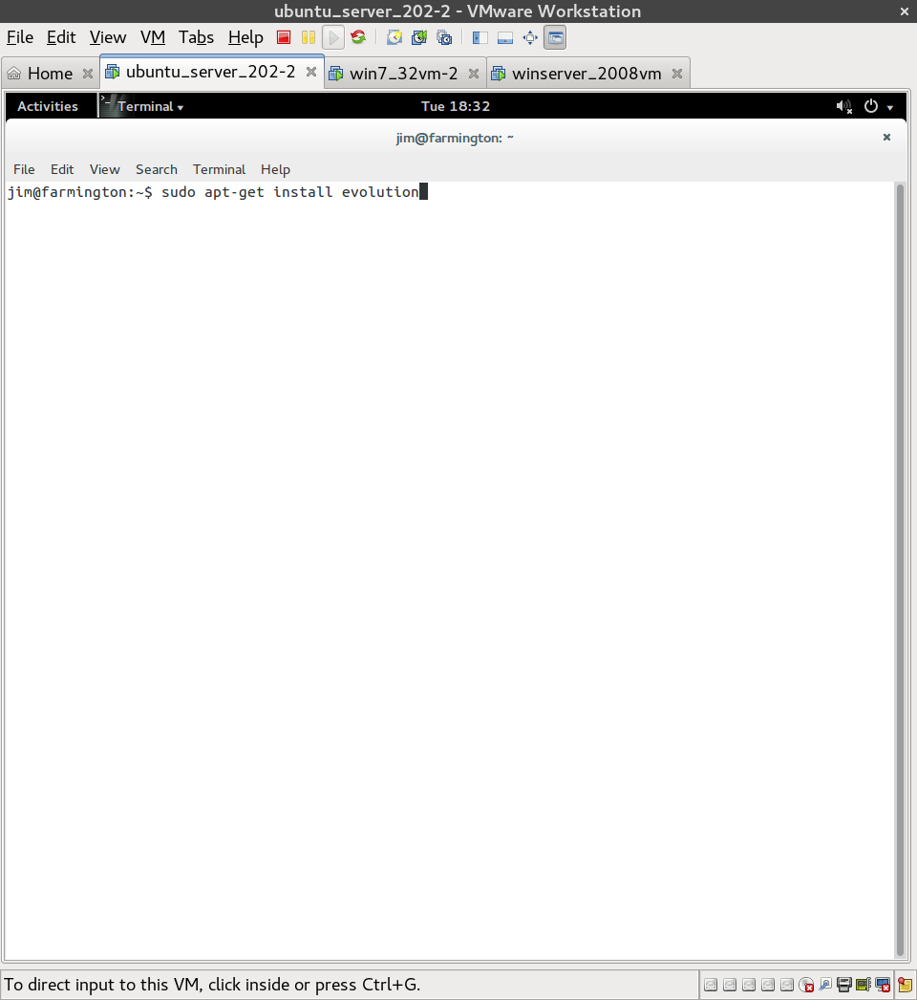
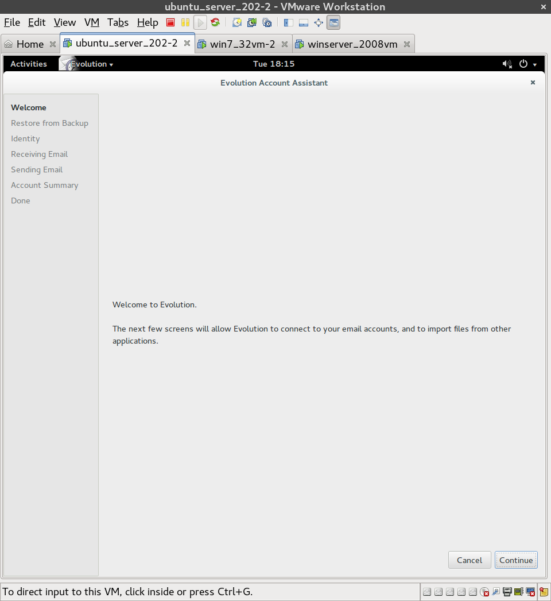
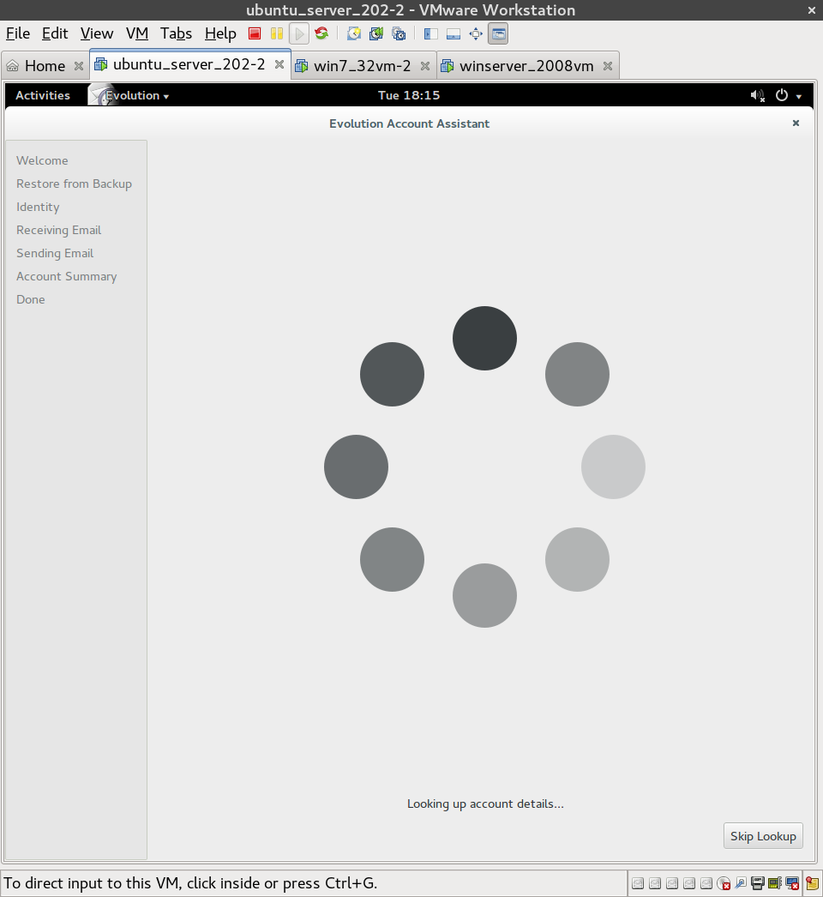
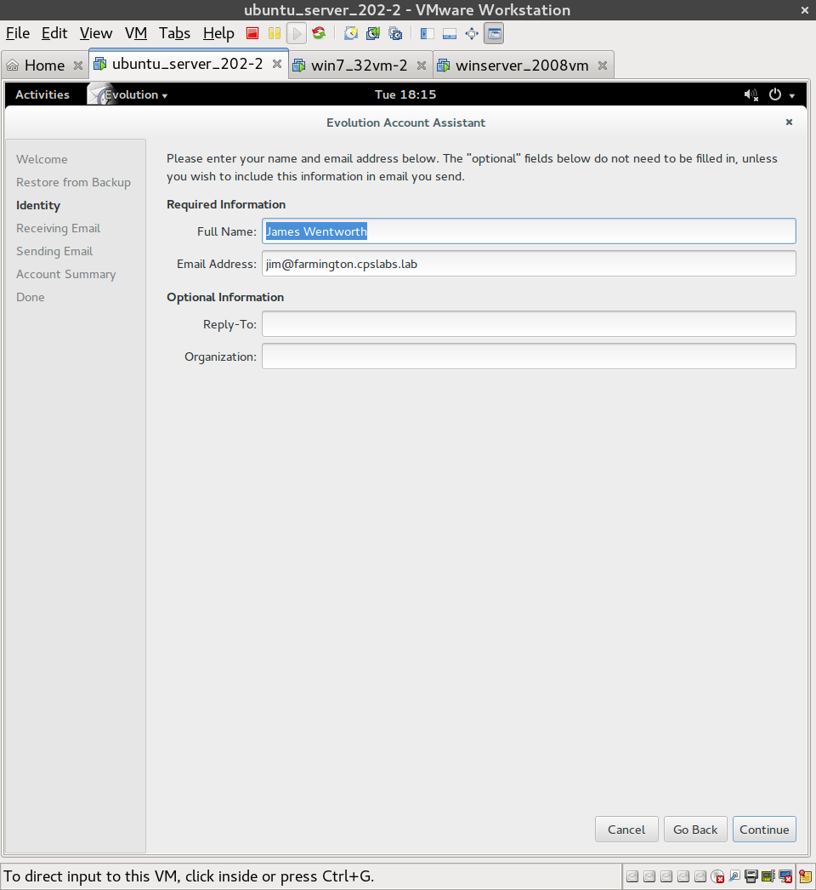
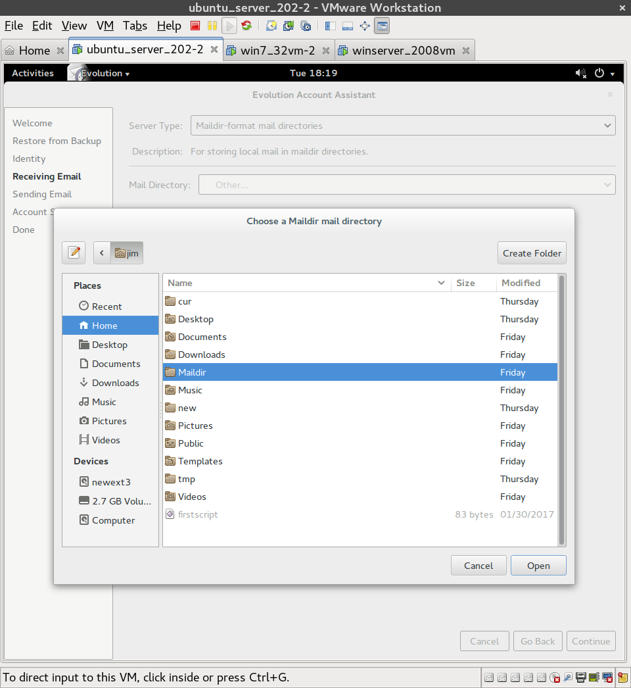

Lab 7: Evolution E-Mail Client
Purpose:
To learn the fundamental logic behind mail server clients and to implement a simple, intuitive email GUI.
Installing Evolution in Ubuntu
1. If Evolution is not pre-installed, open a terminal and type ' sudo apt-get install evolution '

2. Open Evolution. You will be greeted with a Welcome page. Select Continue.

3. Select Skip Lookup. Next select Continue, without changing any defaults, until you reach the Identity page.

4. On the Identity page, enter your name and email address. Since I am using a private server on an intranet, my email looks a little funny. Select Continue.

5. Since I am using postfix with Maildir, I selected Maildir-format mail directories on the Receiving Email page, and then navigated to my Maildir directory.
